oneway.test(y ~ group, data = dat, var.equal = FALSE)2 분산분석과 선형모형
이번 장에서는 분산분석(ANOVA, Analysis of Variance)을 선형모형(linear model)의 특수한 형태로 이해한다.
ANOVA의 표면적인 질문은 다음과 같다.
세 개 이상 집단의 평균이 모두 같은가, 아니면 적어도 하나의 집단 평균이 다른가?
하지만 통계모형 관점에서 보면 질문은 조금 더 깊어진다.
결과변수의 총변동 중 집단 구분으로 설명되는 변동은 얼마나 크며, 그 변동은 집단 내부의 우연 변동에 비해 충분히 큰가?
ANOVA는 “분산”을 분석하지만, 관심은 분산 자체가 아니라 평균 차이의 증거이다. 집단 평균들이 멀리 떨어져 있어도 집단 내부 변동이 매우 크면 평균 차이에 대한 증거는 약해진다. 반대로 집단 평균 차이가 비교적 작아 보여도 집단 내부 변동이 작으면 통계적으로 뚜렷한 차이일 수 있다.
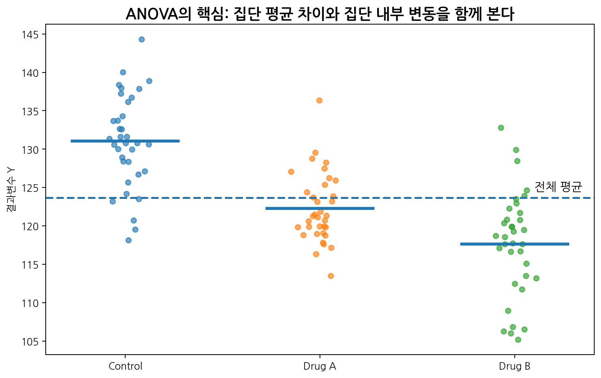
Note핵심 메시지
ANOVA는 세 집단 이상의 평균 비교 방법이면서, 동시에 범주형 설명변수를 가진 선형모형이다. 따라서 ANOVA를 이해하면 회귀분석, GLM, 혼합모형으로 이어지는 통계모형의 구조를 더 잘 이해할 수 있다.
2.1 왜 ANOVA가 필요한가?
2.1.1 두 집단 평균 비교와 세 집단 평균 비교
두 집단의 평균을 비교할 때는 t-test를 사용할 수 있다. 예를 들어 다음과 같은 질문이다.
- 치료군과 대조군의 평균 혈압 감소량이 다른가?
- 남성과 여성의 평균 콜레스테롤 수치가 다른가?
- 치료 전후 평균 통증 점수가 다른가?
하지만 실제 연구에서는 세 개 이상의 집단을 비교해야 하는 경우가 많다.
| 연구 상황 | 집단 |
|---|---|
| 약물 용량 연구 | 위약군, 저용량군, 고용량군 |
| 암 연구 | 병기 I, II, III, IV |
| 수술법 비교 | 수술법 A, B, C |
| 병원 간 비교 | 병원 1, 2, 3, 4 |
| 식이중재 연구 | 일반식, 저염식, 지중해식 |
세 집단이 있을 때 모든 쌍을 t-test로 비교하면 세 번의 검정을 하게 된다.
- Control vs Drug A
- Control vs Drug B
- Drug A vs Drug B
네 집단이면 가능한 쌍 비교는 여섯 번이다.
\[\binom{4}{2} = \frac{4 \times 3}{2} = 6\]
집단 수가 \(k\)개일 때 가능한 모든 쌍 비교 수는 다음과 같다.
\[\binom{k}{2} = \frac{k(k-1)}{2}\]
즉 집단 수가 늘어날수록 검정 횟수가 빠르게 증가한다.
2.1.2 t-test 반복과 1종 오류 증가
각 검정을 유의수준 \(\alpha=0.05\)에서 수행한다고 하자. 한 번의 검정에서 귀무가설이 참인데 잘못 기각할 확률은 5%이다. 하지만 여러 번 검정을 반복하면 “적어도 한 번” 잘못 기각할 확률이 증가한다.
독립적인 검정을 \(m\)번 수행할 때, 모든 검정에서 1종 오류가 발생하지 않을 확률은 다음과 같다.
\[(1-\alpha)^m\]
따라서 적어도 한 번 1종 오류가 발생할 확률은 다음과 같다.
\[1-(1-\alpha)^m\]
예를 들어 \(\alpha=0.05\), \(m=3\)이면 다음과 같다.
\[1-(1-0.05)^3 = 1-0.95^3 = 0.142625\]
즉 전체 오류 확률은 약 14.3%가 된다.
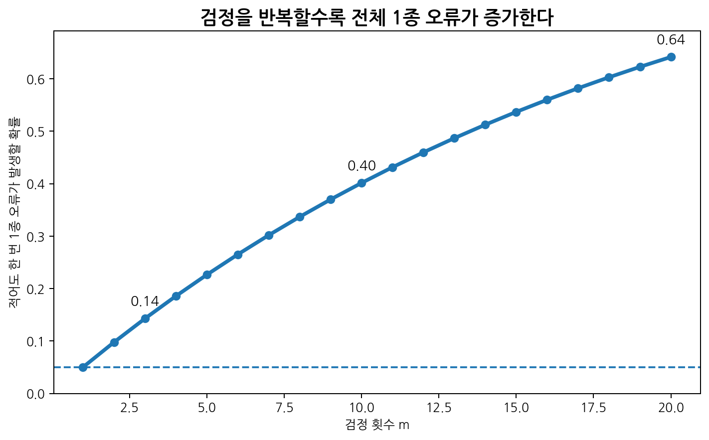
Warning다중검정의 문제
각 검정의 유의수준이 0.05라고 해서, 여러 검정을 수행한 전체 분석의 오류 확률이 0.05로 유지되는 것은 아니다.
ANOVA는 여러 집단 평균이 모두 같은지에 대한 전체 검정(global test)을 먼저 수행한다. 이 전체 검정이 유의할 때 사후분석을 통해 어떤 집단 간 차이가 있는지 평가한다.
2.2 ANOVA의 기본 가설
2.2.1 One-way ANOVA의 귀무가설
one-way ANOVA는 하나의 범주형 설명변수, 즉 하나의 factor가 있을 때 여러 집단의 평균을 비교한다. 집단 수를 \(k\)라고 하자. 각 집단의 모집단 평균을 다음과 같이 쓴다.
\[\mu_1,\mu_2,\ldots,\mu_k\]
귀무가설은 모든 집단 평균이 같다는 것이다.
\[H_0: \mu_1=\mu_2=\cdots=\mu_k\]
예를 들어 세 치료군의 평균 혈압 감소량을 비교한다면 다음과 같다.
\[H_0: \mu_{Control} = \mu_{DrugA} = \mu_{DrugB}\]
2.2.2 대립가설
ANOVA의 대립가설은 다음과 같다.
\[H_1: \text{적어도 하나의 집단 평균은 다르다}\]
중요한 점은 ANOVA의 대립가설이 “모든 평균이 서로 다르다”가 아니라는 것이다. 세 집단 중 한 쌍만 달라도 대립가설은 참이다.
예를 들어 다음 경우는 모두 대립가설에 해당한다.
| 경우 | 평균 패턴 |
|---|---|
| 한 집단만 다름 | \(\mu_1=\mu_2 \neq \mu_3\) |
| 두 집단이 같고 하나가 다름 | \(\mu_1=\mu_3 \neq \mu_2\) |
| 모든 집단이 다름 | \(\mu_1 \neq \mu_2 \neq \mu_3\) |
따라서 ANOVA 결과가 유의하더라도 그 자체만으로는 “어느 집단이 다른지” 알 수 없다. 이를 확인하려면 사후분석이 필요하다.
2.2.3 전체 검정과 쌍별 비교
ANOVA는 전체 검정(global test)이다.
적어도 하나의 집단 평균이 다른가?
사후분석은 쌍별 비교(pairwise comparison)이다.
어떤 집단 쌍이 서로 다른가?
| 분석 | 질문 | 예 |
|---|---|---|
| ANOVA | 전체적으로 차이가 있는가? | 세 치료군 평균이 모두 같은가? |
| Tukey HSD | 어떤 쌍이 다른가? | Drug A vs Control, Drug B vs Control, Drug B vs Drug A |
| Dunnett test | 여러 군을 한 대조군과 비교 | 각 치료군 vs Control |
| Bonferroni 보정 | 여러 검정의 유의수준 조정 | pairwise t-test 보정 |
ANOVA가 유의하지 않으면 일반적으로 사후분석을 해석하는 데 신중해야 한다. 다만 사전에 명확히 계획된 비교가 있다면 전체 ANOVA와 별개로 계획비교(planned contrast)를 사용할 수 있다.
2.3 ANOVA의 직관: 변동을 나누어 보기
2.3.1 총변동
결과변수 \(Y\)가 있다고 하자. 전체 평균은 다음과 같다.
\[\bar{Y} = \frac{1}{n} \sum_{i=1}^{n} Y_i\]
총변동(total variation)은 모든 관측값이 전체 평균에서 얼마나 떨어져 있는지를 나타낸다.
\[SS_{total} = \sum_{i=1}^{n} (Y_i-\bar{Y})^2\]
총변동은 자료 전체의 퍼짐을 나타낸다.
2.3.2 집단간 변동
집단간 변동(between-group variation)은 각 집단 평균이 전체 평균에서 얼마나 떨어져 있는지를 나타낸다.
\[SS_{between} = \sum_{j=1}^{k} n_j (\bar{Y}_j-\bar{Y})^2\]
여기서
- \(k\): 집단 수
- \(n_j\): \(j\)번째 집단의 표본 크기
- \(\bar{Y}_j\): \(j\)번째 집단의 표본평균
- \(\bar{Y}\): 전체 평균
이다.
집단 평균들이 전체 평균에서 멀리 떨어져 있을수록 \(SS_{between}\)은 커진다.
2.3.3 집단내 변동
집단내 변동(within-group variation)은 각 관측값이 자기 집단 평균에서 얼마나 떨어져 있는지를 나타낸다.
\[SS_{within} = \sum_{j=1}^{k} \sum_{i=1}^{n_j} (Y_{ij}-\bar{Y}_j)^2\]
집단내 변동은 같은 집단 안에서도 개인마다 값이 달라지는 정도이다. 이는 오차 변동 또는 설명되지 않은 변동으로 해석할 수 있다.
2.3.4 변동의 분해
ANOVA의 핵심은 전체 변동이 다음처럼 분해된다는 것이다.
\[SS_{total} = SS_{between} + SS_{within}\]
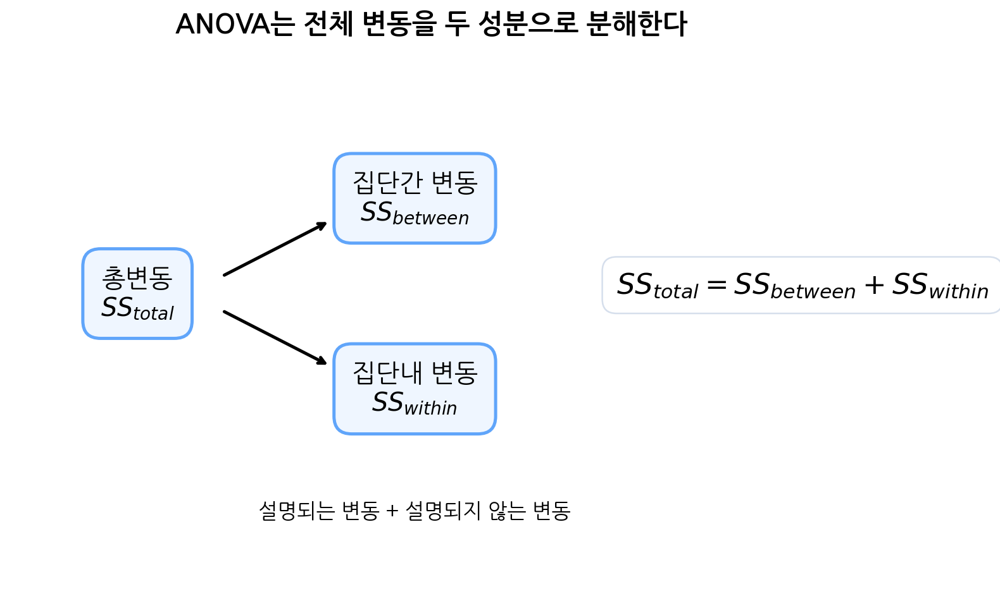
이 식은 다음과 같이 해석할 수 있다.
| 성분 | 의미 |
|---|---|
| \(SS_{total}\) | 전체 자료의 총변동 |
| \(SS_{between}\) | 집단 평균 차이로 설명되는 변동 |
| \(SS_{within}\) | 집단 내부에서 설명되지 않는 변동 |
Tip기억하기
ANOVA는 전체 변동을 “집단 차이로 설명되는 변동”과 “집단 내부의 우연 변동”으로 나누고, 이 둘의 상대적 크기를 비교한다.
2.3.5 변동 분해의 간단한 증명
\(j\)번째 집단의 \(i\)번째 관측값을 \(Y_{ij}\)라고 하자. 각 관측값과 전체 평균의 차이는 다음처럼 쓸 수 있다.
\[Y_{ij}-\bar{Y} = (Y_{ij}-\bar{Y}_j) + (\bar{Y}_j-\bar{Y})\]
양변을 제곱하면,
\[(Y_{ij}-\bar{Y})^2 = (Y_{ij}-\bar{Y}_j)^2 + (\bar{Y}_j-\bar{Y})^2 + 2(Y_{ij}-\bar{Y}_j)(\bar{Y}_j-\bar{Y})\]
이를 모든 관측값에 대해 합하면,
\[\sum_{j=1}^{k}\sum_{i=1}^{n_j}(Y_{ij}-\bar{Y})^2 = \sum_{j=1}^{k}\sum_{i=1}^{n_j}(Y_{ij}-\bar{Y}_j)^2 + \sum_{j=1}^{k}\sum_{i=1}^{n_j}(\bar{Y}_j-\bar{Y})^2 + 2\sum_{j=1}^{k}\sum_{i=1}^{n_j}(Y_{ij}-\bar{Y}_j)(\bar{Y}_j-\bar{Y})\]
마지막 교차항을 보자. 각 집단 \(j\)에 대해 \(\bar{Y}_j-\bar{Y}\)는 상수이므로,
\[\sum_{i=1}^{n_j}(Y_{ij}-\bar{Y}_j)(\bar{Y}_j-\bar{Y}) = (\bar{Y}_j-\bar{Y}) \sum_{i=1}^{n_j}(Y_{ij}-\bar{Y}_j)\]
그런데 집단 평균의 정의에 의해,
\[\sum_{i=1}^{n_j}(Y_{ij}-\bar{Y}_j)=0\]
따라서 교차항은 0이 된다. 결국,
\[SS_{total} = SS_{within} + SS_{between}\]
이다.
2.4 자유도, 평균제곱, F-statistic
2.4.1 자유도
각 제곱합은 자유도를 가진다.
| 변동 성분 | 제곱합 | 자유도 |
|---|---|---|
| 집단간 변동 | \(SS_{between}\) | \(k-1\) |
| 집단내 변동 | \(SS_{within}\) | \(n-k\) |
| 총변동 | \(SS_{total}\) | \(n-1\) |
자유도도 다음 관계를 만족한다.
\[(n-1) = (k-1) + (n-k)\]
집단간 자유도가 \(k-1\)인 이유는 \(k\)개의 집단 평균이 전체 평균과의 관계를 가지기 때문이다. 집단내 자유도가 \(n-k\)인 이유는 각 집단마다 하나의 평균을 추정했기 때문에 전체 \(n\)개 관측값에서 \(k\)개의 평균 추정에 해당하는 자유도가 사용되었기 때문이다.
2.4.2 평균제곱
평균제곱(mean square)은 제곱합을 자유도로 나눈 값이다.
집단간 평균제곱은 다음과 같다.
\[MS_{between} = \frac{SS_{between}}{k-1}\]
집단내 평균제곱은 다음과 같다.
\[MS_{within} = \frac{SS_{within}}{n-k}\]
\(MS_{within}\)은 각 집단 내부의 오차분산을 추정하는 값이다. ANOVA에서는 집단 평균 차이가 없다는 귀무가설하에서 \(MS_{between}\)과 \(MS_{within}\)이 비슷한 크기를 가져야 한다.
2.4.3 F-statistic
ANOVA의 검정통계량은 다음과 같다.
\[F = \frac{MS_{between}}{MS_{within}}\]
해석은 다음과 같다.
- \(F \approx 1\): 집단간 변동이 집단내 변동과 비슷하다.
- \(F > 1\): 집단간 변동이 집단내 변동보다 크다.
- \(F\)가 매우 크다: 집단 평균이 모두 같다는 가정하에서는 보기 어려운 자료일 수 있다.
귀무가설이 참이고 ANOVA 가정이 성립하면 \(F\) 통계량은 다음 분포를 따른다.
\[F \sim F_{k-1,n-k}\]
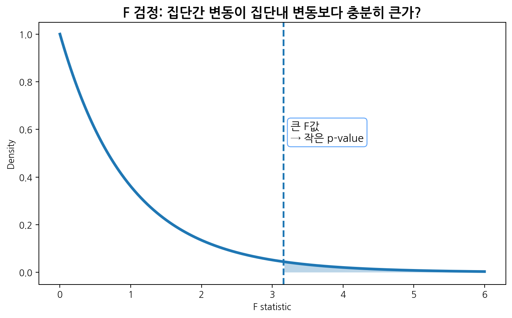
2.4.4 ANOVA table
ANOVA 결과는 보통 다음 표로 요약된다.
| Source | Sum of Squares | df | Mean Square | F | p-value |
|---|---|---|---|---|---|
| Between groups | \(SS_{between}\) | \(k-1\) | \(MS_{between}\) | \(F\) | p |
| Within groups | \(SS_{within}\) | \(n-k\) | \(MS_{within}\) | ||
| Total | \(SS_{total}\) | \(n-1\) |
이 표를 읽을 때는 다음 순서가 좋다.
- 집단 수와 전체 표본 수를 확인한다.
- 집단간 자유도와 집단내 자유도를 확인한다.
- \(MS_{between}\)과 \(MS_{within}\)의 크기를 비교한다.
- F-statistic을 확인한다.
- p-value로 전체 귀무가설을 평가한다.
- 효과크기를 함께 확인한다.
- 필요하면 사후분석 결과를 본다.
2.5 ANOVA와 선형모형
2.5.1 One-way ANOVA를 회귀모형으로 쓰기
세 집단이 있다고 하자.
- Control
- Drug A
- Drug B
Control을 기준범주로 두면 더미변수 두 개를 만들 수 있다.
| Group | \(I(DrugA)\) | \(I(DrugB)\) |
|---|---|---|
| Control | 0 | 0 |
| Drug A | 1 | 0 |
| Drug B | 0 | 1 |
회귀모형은 다음과 같다.
\[Y_i = \beta_0 + \beta_1 I(DrugA_i) + \beta_2 I(DrugB_i) + \epsilon_i\]
각 집단의 예측평균은 다음과 같다.
| 집단 | 예측평균 |
|---|---|
| Control | \(\beta_0\) |
| Drug A | \(\beta_0+\beta_1\) |
| Drug B | \(\beta_0+\beta_2\) |
따라서
- \(\beta_0\): Control군 평균
- \(\beta_1\): Drug A와 Control의 평균 차이
- \(\beta_2\): Drug B와 Control의 평균 차이
이다.
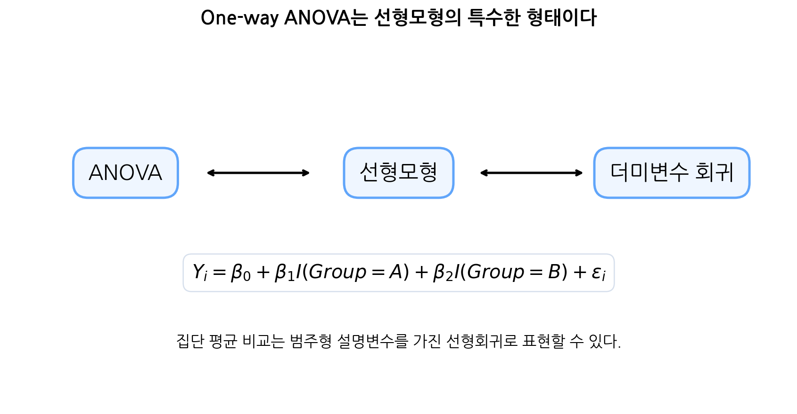
2.5.2 ANOVA의 F-test와 회귀모형의 overall F-test
ANOVA의 귀무가설
\[H_0: \mu_{Control} = \mu_{DrugA} = \mu_{DrugB}\]
는 회귀모형에서는 다음과 같다.
\[H_0: \beta_1=0 \quad \text{and} \quad \beta_2=0\]
즉 집단을 나타내는 모든 더미변수의 계수가 0이라는 뜻이다.
ANOVA의 F-test는 회귀모형에서 집단변수가 전체적으로 필요한지 검정하는 overall F-test와 같다.
NoteANOVA와 회귀분석의 연결
ANOVA는 “집단 평균 비교”라는 언어로 표현되고, 선형회귀는 “더미변수 계수”라는 언어로 표현된다. 하지만 같은 자료와 같은 모형을 사용하면 두 분석은 동일한 정보를 담는다.
2.5.3 기준범주와 사후비교
회귀모형에서 기준범주를 바꾸면 계수 해석이 달라진다. 예를 들어 Control을 기준으로 하면 Drug A와 Control, Drug B와 Control의 차이를 직접 볼 수 있다. 그러나 Drug A와 Drug B의 차이는 계수 하나로 바로 보이지 않는다.
Drug A와 Drug B의 차이는 다음과 같다.
\[(\beta_0+\beta_2)-(\beta_0+\beta_1) = \beta_2-\beta_1\]
따라서 모든 쌍별 비교를 보려면 contrast 또는 사후분석이 필요하다.
2.6 ANOVA의 가정
2.6.1 독립성
독립성은 관측값들이 서로 독립이라는 가정이다. 예를 들어 각 환자가 한 번만 측정되고, 한 환자의 값이 다른 환자의 값에 영향을 주지 않는다면 독립성 가정이 비교적 타당하다.
독립성이 깨질 수 있는 예는 다음과 같다.
- 같은 환자를 여러 시점에서 반복 측정
- 같은 병원에 속한 환자들이 유사한 치료환경 공유
- 같은 가족 구성원이 함께 포함된 유전 연구
- 좌우 눈, 양쪽 무릎처럼 한 사람에게서 두 개 관측값이 존재
독립성이 깨지는 자료에는 반복측정 ANOVA, 혼합모형, GEE 등을 고려해야 한다.
2.6.2 정규성
ANOVA의 정규성 가정은 각 집단의 결과변수가 정규분포를 따른다는 방식으로 설명되기도 하지만, 선형모형 관점에서는 잔차가 정규분포에 가깝다는 가정으로 이해할 수 있다.
\[\epsilon_{ij} \sim N(0,\sigma^2)\]
표본 크기가 충분하고 집단별 표본 수가 비슷하면 ANOVA는 정규성 위반에 어느 정도 강건할 수 있다. 그러나 표본 수가 작고 분포가 심하게 비대칭이거나 이상치가 많으면 결과가 왜곡될 수 있다.
정규성 확인 방법은 다음과 같다.
- 집단별 히스토그램
- 집단별 Q-Q plot
- 잔차 Q-Q plot
- Shapiro-Wilk 검정
- 이상치 확인
2.6.3 등분산성
등분산성은 각 집단의 분산이 같다는 가정이다.
\[\sigma_1^2 = \sigma_2^2 = \cdots = \sigma_k^2\]
선형모형 관점에서는 오차분산이 집단에 따라 달라지지 않는다는 뜻이다.
\[Var(\epsilon_{ij}) = \sigma^2\]
등분산성은 집단별 표준편차, boxplot, residuals vs fitted plot, Levene test, Bartlett test 등으로 확인할 수 있다.
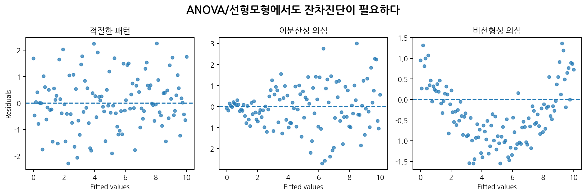
Warning등분산성 위반
집단별 표본 수가 매우 다르고 분산도 다르면 일반 ANOVA의 p-value가 왜곡될 수 있다. 이런 경우 Welch ANOVA를 고려한다.
2.6.4 이상치와 영향점
ANOVA에서도 이상치는 평균과 분산에 영향을 준다. 한 집단에 극단값이 하나만 있어도 그 집단의 평균과 집단내 변동이 크게 변할 수 있다.
이상치를 발견하면 다음 순서로 확인한다.
- 자료 입력 오류인가?
- 측정 오류인가?
- 연구대상 포함 기준을 위반한 값인가?
- 실제 가능한 생물학적 변동인가?
- 이상치를 포함한 분석과 제외한 민감도 분석의 결론이 다른가?
이상치를 임의로 삭제해서는 안 된다. 삭제 여부는 분석 전에 정한 원칙 또는 명확한 자료 오류 근거에 따라 결정해야 한다.
2.7 사후분석과 다중비교
2.7.1 왜 사후분석이 필요한가?
ANOVA가 유의하면 전체적으로 적어도 하나의 평균 차이가 있다는 뜻이다. 하지만 어느 집단이 다른지는 알려주지 않는다. 이를 확인하기 위해 사후분석(post-hoc analysis)을 수행한다.
예를 들어 세 집단에서 ANOVA가 유의했다면 다음 쌍을 비교할 수 있다.
- Control vs Drug A
- Control vs Drug B
- Drug A vs Drug B
사후분석은 다중비교 문제를 고려해야 한다.
2.7.2 Tukey HSD
Tukey HSD는 모든 쌍별 평균 비교를 수행하면서 family-wise error rate를 조절하는 대표적 방법이다. 집단 수가 많고 모든 쌍의 비교가 관심일 때 자주 사용한다.
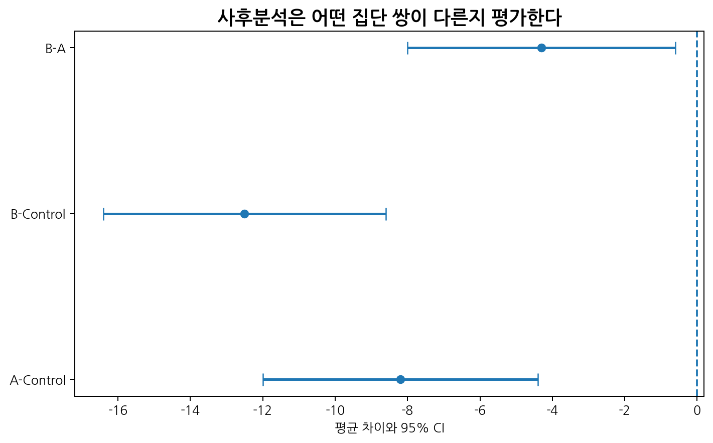
Tukey HSD 결과에서 확인할 것은 다음이다.
- 비교한 두 집단
- 평균 차이
- 보정된 p-value
- 평균 차이의 신뢰구간
- 신뢰구간이 0을 포함하는지 여부
2.7.3 계획비교
사후분석은 자료를 본 뒤 수행하는 모든 쌍 비교인 경우가 많다. 반면 계획비교(planned contrast)는 연구 시작 전부터 정한 특정 비교이다.
예를 들어 세 치료군이 있을 때 연구질문이 처음부터 “고용량군이 위약군보다 우수한가?”라면 모든 쌍을 비교할 필요 없이 해당 비교를 계획비교로 수행할 수 있다.
계획비교는 통계적으로 더 효율적일 수 있지만, 사전에 명확히 정의되어야 한다.
2.7.4 Bonferroni 보정
Bonferroni 보정은 여러 검정을 수행할 때 각 검정의 유의수준을 더 엄격하게 만드는 방법이다.
전체 유의수준을 \(\alpha\)로 유지하고 \(m\)개의 검정을 한다면 각 검정의 유의수준을 다음과 같이 둔다.
\[\alpha^\ast = \frac{\alpha}{m}\]
예를 들어 \(\alpha=0.05\), \(m=5\)이면,
\[\alpha^\ast = 0.01\]
Bonferroni 보정은 단순하고 보수적이다. 검정 수가 많으면 실제 차이가 있어도 유의하지 않게 나올 가능성이 커진다.
2.8 효과크기
2.8.1 p-value만으로는 부족하다
ANOVA 결과가 유의하다고 해서 차이가 임상적으로 중요하다는 뜻은 아니다. 표본 크기가 매우 크면 아주 작은 평균 차이도 통계적으로 유의할 수 있다.
반대로 표본 크기가 작으면 임상적으로 중요한 차이도 통계적으로 유의하지 않을 수 있다.
따라서 ANOVA 결과를 해석할 때는 다음을 함께 보아야 한다.
- 집단별 평균
- 평균 차이
- 신뢰구간
- p-value
- 효과크기
- 임상적 의미
2.8.2 Eta-squared
ANOVA에서 자주 쓰는 효과크기 중 하나는 eta-squared이다.
\[\eta^2 = \frac{SS_{between}}{SS_{total}}\]
이는 전체 변동 중 집단 구분으로 설명되는 비율이다.
예를 들어 \(\eta^2=0.12\)라면 전체 변동의 약 12%가 집단 차이로 설명된다는 뜻이다.
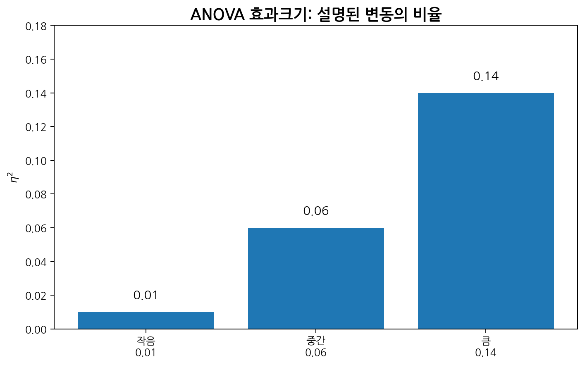
대략적인 해석 기준은 다음과 같이 소개되지만, 분야와 연구맥락에 따라 달라질 수 있다.
| \(\eta^2\) | 대략적 해석 |
|---|---|
| 0.01 | 작은 효과 |
| 0.06 | 중간 효과 |
| 0.14 | 큰 효과 |
2.8.3 Partial eta-squared
여러 요인을 포함하는 ANOVA에서는 partial eta-squared도 자주 사용한다.
\[\eta_p^2 = \frac{SS_{effect}}{SS_{effect}+SS_{error}}\]
이는 특정 효과가, 그 효과와 오차항을 합친 변동 중 얼마나 설명하는지를 나타낸다. Two-way ANOVA 또는 ANCOVA에서 자주 보고된다.
2.9 등분산성이 의심될 때
2.9.1 Welch ANOVA
일반 one-way ANOVA는 집단별 분산이 같다는 가정을 사용한다. 집단별 분산이 크게 다르거나 표본 수가 불균형하면 Welch ANOVA를 고려할 수 있다.
Welch ANOVA는 각 집단의 분산이 다를 수 있음을 허용한다. R에서는 다음과 같이 실행한다.
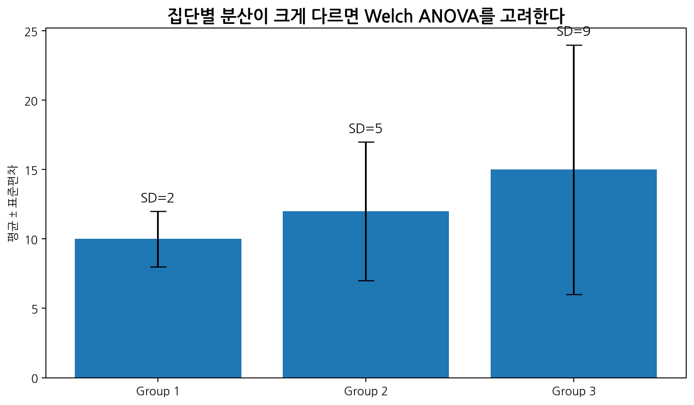
일반적으로 다음 상황에서는 Welch ANOVA가 유용하다.
- 집단별 표준편차가 크게 다르다.
- 집단별 표본 수가 불균형하다.
- 등분산성 검정이 명확히 위반을 시사한다.
- 연구목적상 평균 비교가 여전히 중요하다.
2.9.2 Kruskal-Wallis 검정
Kruskal-Wallis 검정은 one-way ANOVA의 비모수 대안으로 자주 소개된다. 원자료의 순위를 이용하여 집단 간 분포 차이를 평가한다.
R에서는 다음과 같이 실행한다.
kruskal.test(y ~ group, data = dat)하지만 Kruskal-Wallis 검정을 단순히 “중앙값 비교”로만 해석하는 것은 조심해야 한다. 집단별 분포 모양이 비슷할 때 위치 차이로 해석하기 쉽지만, 분포 모양이나 분산이 다르면 더 일반적인 분포 차이로 해석해야 한다.
| 상황 | 고려할 방법 |
|---|---|
| 정규성은 다소 위반, 표본 충분 | ANOVA가 비교적 강건할 수 있음 |
| 등분산성 위반 | Welch ANOVA |
| 심한 비대칭, 이상치, 작은 표본 | Kruskal-Wallis |
| 반복측정 | 반복측정 ANOVA 또는 혼합모형 |
| 공변량 조정 필요 | ANCOVA 또는 회귀모형 |
2.10 Two-way ANOVA
2.10.1 두 요인이 있는 평균 비교
one-way ANOVA는 하나의 factor만 포함한다. Two-way ANOVA는 두 개의 factor가 있을 때 사용한다.
예를 들어 약물 용량과 성별이 모두 결과에 영향을 줄 수 있다고 하자.
| 요인 | 수준 |
|---|---|
| Dose | Control, Low, High |
| Sex | Male, Female |
Two-way ANOVA에서는 다음을 평가할 수 있다.
- Dose의 주효과
- Sex의 주효과
- Dose와 Sex의 상호작용
2.10.2 주효과
주효과(main effect)는 다른 요인을 평균적으로 고려했을 때 특정 요인이 결과변수와 관련되는지를 의미한다.
예를 들어 Dose의 주효과는 다음 질문이다.
성별을 평균적으로 고려했을 때, 용량군에 따라 평균 반응이 다른가?
Sex의 주효과는 다음 질문이다.
용량군을 평균적으로 고려했을 때, 남성과 여성의 평균 반응이 다른가?
2.10.3 상호작용
상호작용(interaction)은 한 요인의 효과가 다른 요인의 수준에 따라 달라지는 경우이다.
예를 들어 약물 용량 효과가 남성과 여성에서 다르다면 Dose와 Sex 사이에 상호작용이 있다고 말한다.
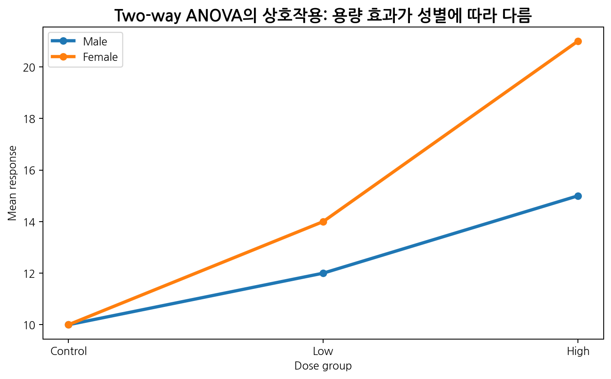
상호작용이 있는 경우 주효과만 해석하는 것은 위험할 수 있다. 예를 들어 전체 평균으로 보면 용량 효과가 작아 보이지만 특정 성별에서는 매우 클 수 있다.
2.10.4 Two-way ANOVA 모형
두 요인이 있는 선형모형은 다음과 같이 쓸 수 있다.
\[Y_{ijk} = \mu + \alpha_i + \gamma_j + (\alpha\gamma)_{ij} + \epsilon_{ijk}\]
여기서
- \(\mu\): 전체 평균
- \(\alpha_i\): 첫 번째 요인의 효과
- \(\gamma_j\): 두 번째 요인의 효과
- \((\alpha\gamma)_{ij}\): 상호작용 효과
- \(\epsilon_{ijk}\): 오차항
이다.
회귀모형으로는 더미변수와 상호작용항을 포함한 선형모형으로 표현된다.
lm(y ~ dose * sex, data = dat)여기서 dose * sex는 다음과 같다.
dose + sex + dose:sex즉 두 주효과와 상호작용을 모두 포함한다.
2.11 R 실습
2.11.1 예제 데이터 생성
세 치료군의 혈압 감소량을 비교하는 가상 자료를 만들자. 값이 클수록 혈압이 더 많이 감소한 것으로 해석한다.
set.seed(2025)
n_per_group <- 35
group <- factor(
rep(c("Control", "DrugA", "DrugB"), each = n_per_group),
levels = c("Control", "DrugA", "DrugB")
)
reduction <- c(
rnorm(n_per_group, mean = 5, sd = 6),
rnorm(n_per_group, mean = 10, sd = 6),
rnorm(n_per_group, mean = 14, sd = 6)
)
dat <- data.frame(
group = group,
reduction = reduction
)
head(dat) group reduction
1 Control 8.724540
2 Control 5.213848
3 Control 9.638927
4 Control 12.634935
5 Control 7.225853
6 Control 4.022874summary(dat) group reduction
Control:35 Min. :-5.530
DrugA :35 1st Qu.: 5.011
DrugB :35 Median : 9.213
Mean : 9.659
3rd Qu.:13.994
Max. :24.296 2.11.2 집단별 기술통계
aggregate(
reduction ~ group,
data = dat,
FUN = function(x) c(
n = length(x),
mean = mean(x),
sd = sd(x),
median = median(x),
iqr = IQR(x)
)
) group reduction.n reduction.mean reduction.sd reduction.median
1 Control 35.000000 5.974052 6.063929 5.213848
2 DrugA 35.000000 10.326000 6.056357 11.702494
3 DrugB 35.000000 12.676002 6.033955 11.446526
reduction.iqr
1 6.601817
2 9.259742
3 8.280725더 보기 좋은 형태로 정리하면 다음과 같다.
group_summary <- do.call(
data.frame,
aggregate(
reduction ~ group,
data = dat,
FUN = function(x) c(
n = length(x),
mean = mean(x),
sd = sd(x)
)
)
)
group_summary group reduction.n reduction.mean reduction.sd
1 Control 35 5.974052 6.063929
2 DrugA 35 10.326000 6.056357
3 DrugB 35 12.676002 6.0339552.11.3 Boxplot과 평균 표시
boxplot(
reduction ~ group,
data = dat,
xlab = "Treatment group",
ylab = "Blood pressure reduction",
main = "Blood pressure reduction by group"
)
points(
1:3,
tapply(dat$reduction, dat$group, mean),
pch = 19
)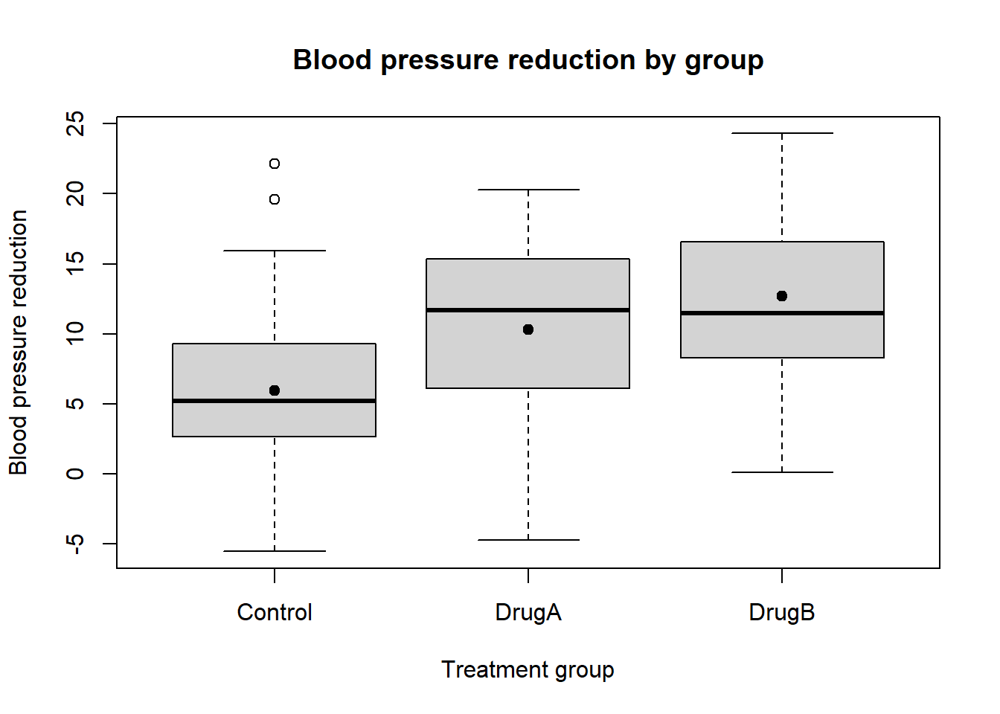
분석 전에 반드시 시각화를 통해 다음을 확인한다.
- 집단별 중심 위치
- 집단별 퍼짐
- 이상치
- 분포의 비대칭성
- 평균 비교가 적절한지
2.11.4 One-way ANOVA
fit_aov <- aov(
reduction ~ group,
data = dat
)
summary(fit_aov) Df Sum Sq Mean Sq F value Pr(>F)
group 2 809 404.7 11.05 4.53e-05 ***
Residuals 102 3735 36.6
---
Signif. codes: 0 '***' 0.001 '**' 0.01 '*' 0.05 '.' 0.1 ' ' 1ANOVA 결과에서 확인할 값은 다음이다.
Df: 자유도Sum Sq: 제곱합Mean Sq: 평균제곱F value: F-statisticPr(>F): p-value
2.11.5 선형모형으로 같은 분석
fit_lm <- lm(
reduction ~ group,
data = dat
)
summary(fit_lm)
Call:
lm(formula = reduction ~ group, data = dat)
Residuals:
Min 1Q Median 3Q Max
-15.0302 -3.9925 -0.5947 3.5086 16.1426
Coefficients:
Estimate Std. Error t value Pr(>|t|)
(Intercept) 5.974 1.023 5.840 6.24e-08 ***
groupDrugA 4.352 1.447 3.008 0.00331 **
groupDrugB 6.702 1.447 4.633 1.07e-05 ***
---
Signif. codes: 0 '***' 0.001 '**' 0.01 '*' 0.05 '.' 0.1 ' ' 1
Residual standard error: 6.051 on 102 degrees of freedom
Multiple R-squared: 0.1781, Adjusted R-squared: 0.162
F-statistic: 11.05 on 2 and 102 DF, p-value: 4.526e-05anova(fit_lm)Analysis of Variance Table
Response: reduction
Df Sum Sq Mean Sq F value Pr(>F)
group 2 809.4 404.71 11.052 4.526e-05 ***
Residuals 102 3735.2 36.62
---
Signif. codes: 0 '***' 0.001 '**' 0.01 '*' 0.05 '.' 0.1 ' ' 1aov()와 lm()은 같은 선형모형을 다른 방식으로 보여준다.
fitted_aov <- fitted(fit_aov)
fitted_lm <- fitted(fit_lm)
all.equal(fitted_aov, fitted_lm)[1] TRUE2.11.6 회귀계수 해석
coef(fit_lm)(Intercept) groupDrugA groupDrugB
5.974052 4.351948 6.701950 confint(fit_lm) 2.5 % 97.5 %
(Intercept) 3.945178 8.002925
groupDrugA 1.482688 7.221209
groupDrugB 3.832690 9.571210Control이 기준범주일 때 계수 해석은 다음과 같다.
| 계수 | 해석 |
|---|---|
(Intercept) |
Control군의 평균 |
groupDrugA |
Drug A와 Control의 평균 차이 |
groupDrugB |
Drug B와 Control의 평균 차이 |
Drug A와 Drug B의 차이를 직접 보고 싶다면 기준범주를 바꿀 수 있다.
dat$group_relevel <- relevel(dat$group, ref = "DrugA")
fit_lm_relevel <- lm(
reduction ~ group_relevel,
data = dat
)
summary(fit_lm_relevel)
Call:
lm(formula = reduction ~ group_relevel, data = dat)
Residuals:
Min 1Q Median 3Q Max
-15.0302 -3.9925 -0.5947 3.5086 16.1426
Coefficients:
Estimate Std. Error t value Pr(>|t|)
(Intercept) 10.326 1.023 10.095 < 2e-16 ***
group_relevelControl -4.352 1.447 -3.008 0.00331 **
group_relevelDrugB 2.350 1.447 1.625 0.10735
---
Signif. codes: 0 '***' 0.001 '**' 0.01 '*' 0.05 '.' 0.1 ' ' 1
Residual standard error: 6.051 on 102 degrees of freedom
Multiple R-squared: 0.1781, Adjusted R-squared: 0.162
F-statistic: 11.05 on 2 and 102 DF, p-value: 4.526e-052.11.7 Tukey 사후분석
TukeyHSD(fit_aov) Tukey multiple comparisons of means
95% family-wise confidence level
Fit: aov(formula = reduction ~ group, data = dat)
$group
diff lwr upr p adj
DrugA-Control 4.351948 0.9114188 7.792478 0.0091984
DrugB-Control 6.701950 3.2614207 10.142480 0.0000316
DrugB-DrugA 2.350002 -1.0905277 5.790531 0.2400057결과에서 diff는 두 집단 평균 차이, lwr과 upr은 신뢰구간, p adj는 다중비교 보정 후 p-value이다.
plot(TukeyHSD(fit_aov))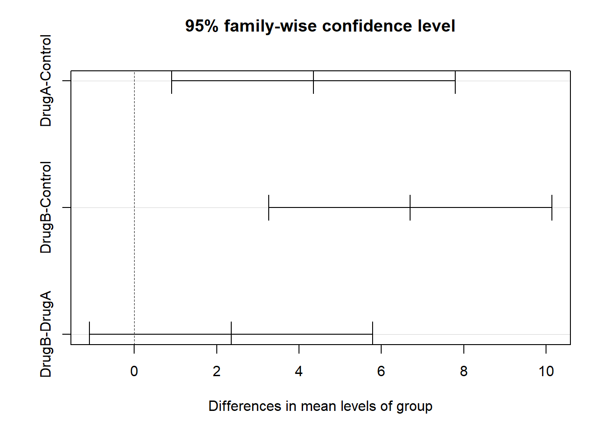
2.11.8 Pairwise t-test와 p-value 보정
pairwise.t.test(
dat$reduction,
dat$group,
p.adjust.method = "bonferroni"
)
Pairwise comparisons using t tests with pooled SD
data: dat$reduction and dat$group
Control DrugA
DrugA 0.0099 -
DrugB 3.2e-05 0.3220
P value adjustment method: bonferroni pairwise.t.test(
dat$reduction,
dat$group,
p.adjust.method = "holm"
)
Pairwise comparisons using t tests with pooled SD
data: dat$reduction and dat$group
Control DrugA
DrugA 0.0066 -
DrugB 3.2e-05 0.1073
P value adjustment method: holm 보정 방법에 따라 p-value가 달라질 수 있다. 분석계획서나 연구 질문에 맞는 보정 방법을 사전에 정하는 것이 바람직하다.
2.11.9 효과크기 계산
eta-squared는 다음처럼 직접 계산할 수 있다.
aov_table <- anova(fit_lm)
ss_between <- aov_table["group", "Sum Sq"]
ss_total <- sum(aov_table[, "Sum Sq"])
eta_squared <- ss_between / ss_total
eta_squared[1] 0.1781029이는 전체 변동 중 집단으로 설명되는 비율이다.
2.11.10 잔차진단
par(mfrow = c(2, 2))
plot(fit_lm)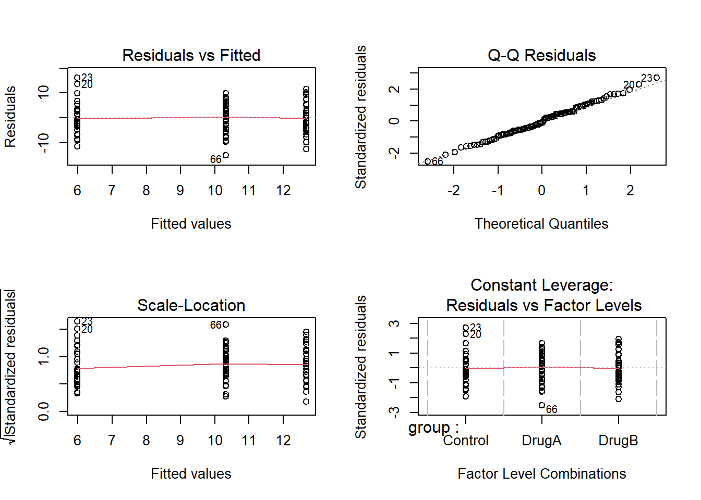
par(mfrow = c(1, 1))잔차진단 그래프를 통해 선형모형 가정을 확인한다.
| 그래프 | 확인 내용 |
|---|---|
| Residuals vs Fitted | 등분산성, 모형 형태 |
| Normal Q-Q | 잔차 정규성 |
| Scale-Location | 등분산성 |
| Residuals vs Leverage | 영향점 |
2.11.11 잔차 정규성 확인
res <- residuals(fit_lm)
hist(
res,
breaks = 20,
main = "Histogram of residuals",
xlab = "Residuals"
)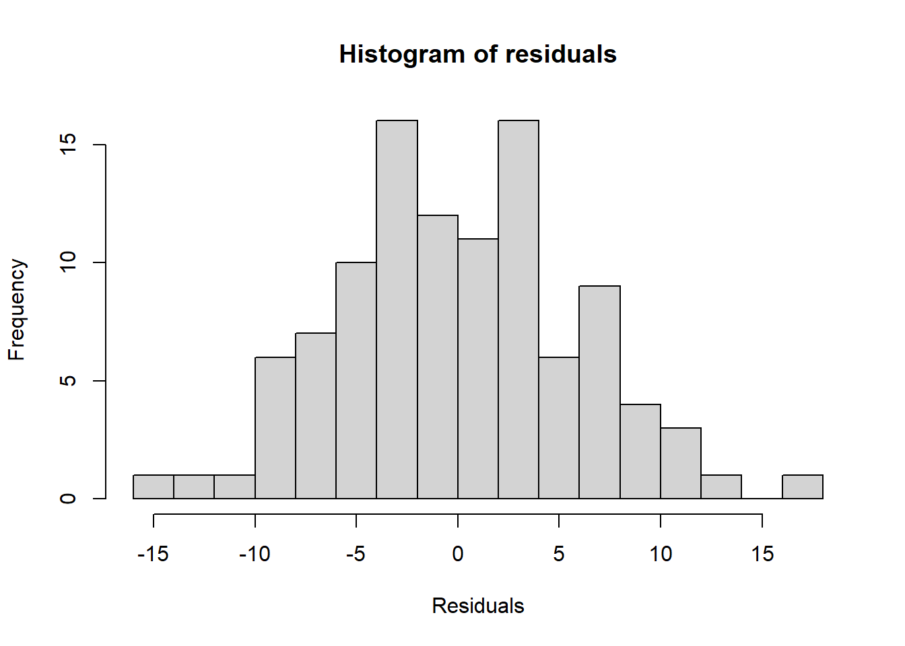
qqnorm(res)
qqline(res, lwd = 2)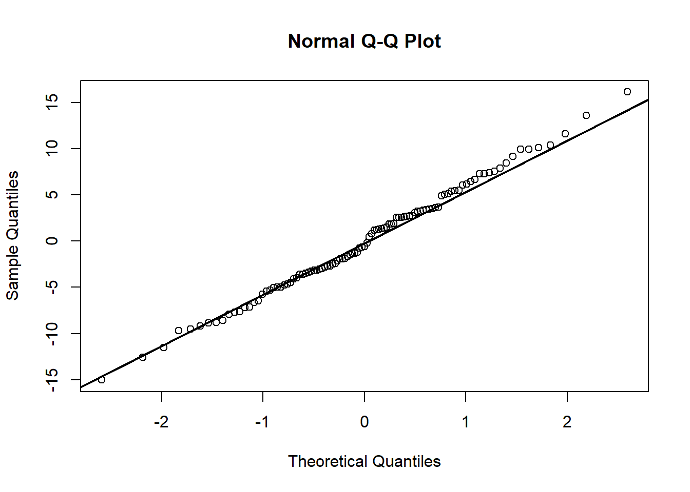
shapiro.test(res)
Shapiro-Wilk normality test
data: res
W = 0.99503, p-value = 0.9705Shapiro-Wilk 검정은 표본 크기에 민감하다. 결과는 그래프와 함께 해석해야 한다.
2.11.12 등분산성 확인
기본 R만 사용해 집단별 표준편차를 확인할 수 있다.
tapply(dat$reduction, dat$group, sd) Control DrugA DrugB
6.063929 6.056357 6.033955 Bartlett 검정은 정규성에 민감하다.
bartlett.test(
reduction ~ group,
data = dat
)
Bartlett test of homogeneity of variances
data: reduction by group
Bartlett's K-squared = 0.00089092, df = 2, p-value = 0.9996Levene 검정은 car 패키지가 설치되어 있으면 사용할 수 있다.
library(car)
leveneTest(
reduction ~ group,
data = dat
)2.11.13 Welch ANOVA
등분산성이 의심되면 Welch ANOVA를 사용할 수 있다.
oneway.test(
reduction ~ group,
data = dat,
var.equal = FALSE
)
One-way analysis of means (not assuming equal variances)
data: reduction and group
F = 10.942, num df = 2, denom df = 68, p-value = 7.586e-05일반 ANOVA와 Welch ANOVA의 결과가 크게 다르면 등분산성 위반의 영향을 의심해야 한다.
2.11.14 Kruskal-Wallis 검정
분포가 심하게 비정규이고 이상치가 많으면 Kruskal-Wallis 검정을 고려할 수 있다.
kruskal.test(
reduction ~ group,
data = dat
)
Kruskal-Wallis rank sum test
data: reduction by group
Kruskal-Wallis chi-squared = 18.974, df = 2, p-value = 7.582e-05쌍별 비교가 필요하면 Wilcoxon rank-sum test에 p-value 보정을 적용할 수 있다.
pairwise.wilcox.test(
dat$reduction,
dat$group,
p.adjust.method = "holm"
)
Pairwise comparisons using Wilcoxon rank sum exact test
data: dat$reduction and dat$group
Control DrugA
DrugA 0.0061 -
DrugB 3.4e-05 0.1817
P value adjustment method: holm 2.11.15 Two-way ANOVA 예제
이번에는 약물 용량과 성별이 모두 있는 자료를 생성한다.
set.seed(2026)
dose <- factor(
rep(c("Control", "Low", "High"), each = 60),
levels = c("Control", "Low", "High")
)
sex <- factor(
rep(rep(c("Male", "Female"), each = 30), times = 3),
levels = c("Male", "Female")
)
response <- 50 +
4 * (dose == "Low") +
8 * (dose == "High") +
3 * (sex == "Female") +
5 * (dose == "High") * (sex == "Female") +
rnorm(length(dose), 0, 8)
dat2 <- data.frame(
response = response,
dose = dose,
sex = sex
)
head(dat2) response dose sex
1 54.16471 Control Male
2 41.36247 Control Male
3 51.11390 Control Male
4 49.32201 Control Male
5 44.66688 Control Male
6 29.87129 Control Male2.11.16 Two-way ANOVA 적합
fit_two <- lm(
response ~ dose * sex,
data = dat2
)
anova(fit_two)Analysis of Variance Table
Response: response
Df Sum Sq Mean Sq F value Pr(>F)
dose 2 5038.2 2519.08 40.7043 3.15e-15 ***
sex 1 417.9 417.89 6.7524 0.01017 *
dose:sex 2 193.6 96.81 1.5642 0.21218
Residuals 174 10768.4 61.89
---
Signif. codes: 0 '***' 0.001 '**' 0.01 '*' 0.05 '.' 0.1 ' ' 1summary(fit_two)
Call:
lm(formula = response ~ dose * sex, data = dat2)
Residuals:
Min 1Q Median 3Q Max
-19.7956 -5.7607 -0.3564 4.8904 20.1406
Coefficients:
Estimate Std. Error t value Pr(>|t|)
(Intercept) 49.421 1.436 34.409 < 2e-16 ***
doseLow 4.853 2.031 2.389 0.018 *
doseHigh 10.970 2.031 5.401 2.15e-07 ***
sexFemale 2.396 2.031 1.180 0.240
doseLow:sexFemale -1.501 2.873 -0.522 0.602
doseHigh:sexFemale 3.454 2.873 1.202 0.231
---
Signif. codes: 0 '***' 0.001 '**' 0.01 '*' 0.05 '.' 0.1 ' ' 1
Residual standard error: 7.867 on 174 degrees of freedom
Multiple R-squared: 0.3441, Adjusted R-squared: 0.3253
F-statistic: 18.26 on 5 and 174 DF, p-value: 1.507e-14dose * sex는 dose, sex, dose:sex를 모두 포함한다.
상호작용항이 유의하면 dose 효과가 sex에 따라 다르다는 뜻이다.
2.11.17 상호작용 그림
interaction.plot(
x.factor = dat2$dose,
trace.factor = dat2$sex,
response = dat2$response,
xlab = "Dose",
ylab = "Mean response",
trace.label = "Sex"
)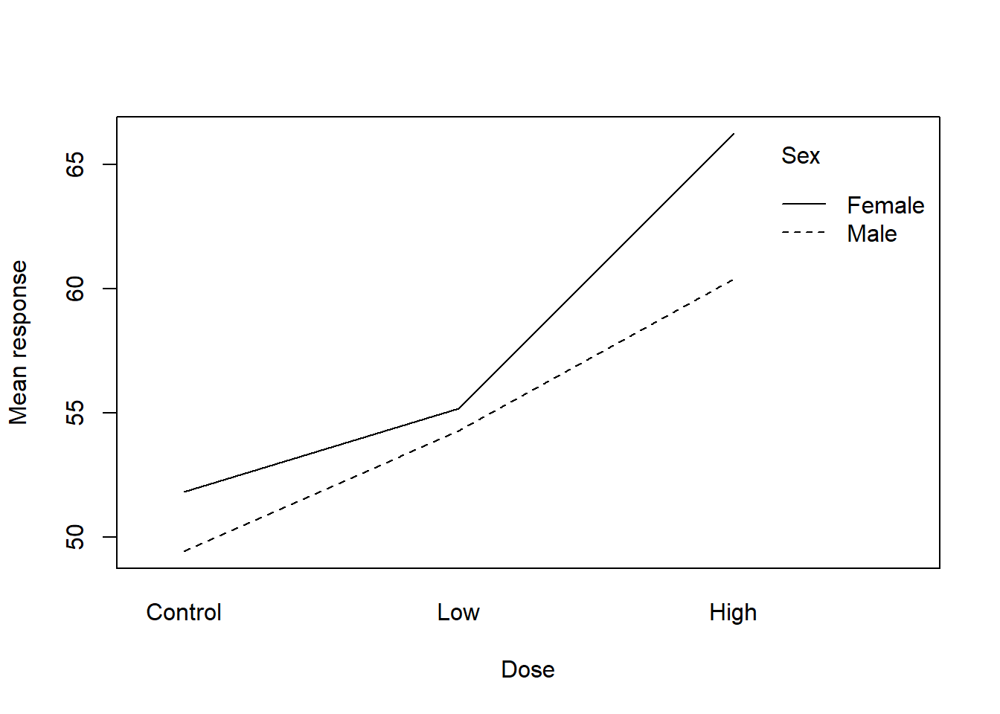
두 선이 평행하지 않으면 상호작용 가능성을 시사한다. 다만 그림만으로 결론을 내리기보다 모형 결과와 함께 해석해야 한다.